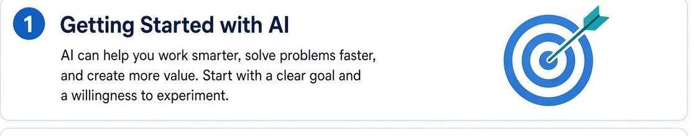
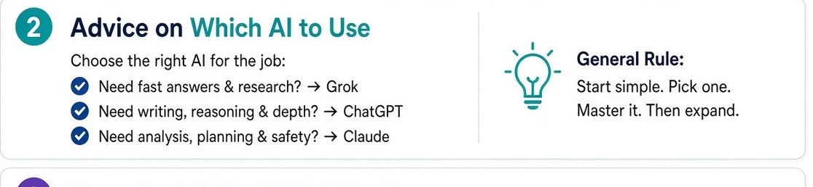
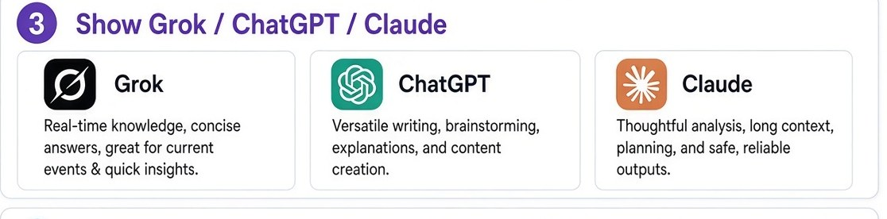
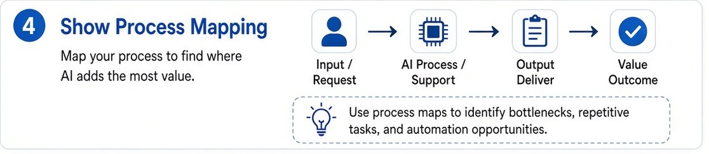
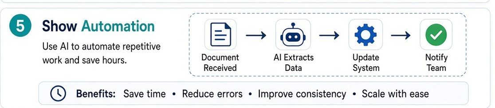
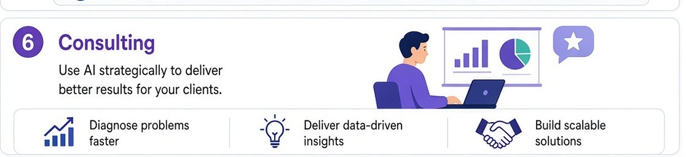

1
Getting started with AI

We start with one job, not a stack of tools. AI is useful when the goal is clear: a slower loop, a retyped file, a decision that still sits in one person's head. We try a small change and see if it holds.
Most of the useful work is already on your plate. I sit with how it actually happens, then we change one job. The rest can wait. This is the run-through I use when we get started with AI.
1

We start with one job, not a stack of tools. AI is useful when the goal is clear: a slower loop, a retyped file, a decision that still sits in one person's head. We try a small change and see if it holds.
2

You do not need three logins. Fast research and what is happening now: Grok. Writing, drafting, explaining: ChatGPT. Long files and careful analysis: Claude. Pick one. Use it until the work asks for something else.
3

I sit with the model that fits the job in front of us. Grok for current, concise answers. ChatGPT when the work is writing or explaining. Claude when the document is long and the output needs to stay careful. You still read what goes out.
4

Before we automate, we write the steps. Request in, work in the middle, something useful out. The map shows where a person is still retyping, and where a tool would actually help.
5

Once the steps are written, we look at the repeating bit. A document arrives, the useful fields come out, the system updates, someone is told. A person still checks it before it goes to a customer. Time back, fewer mistakes, the same job done the same way.
6

Then we sit with it. Diagnose the slow job, use the numbers you already have, and leave a change that still works when I am not in the room.
If one of those is eating the week, send an enquiry.